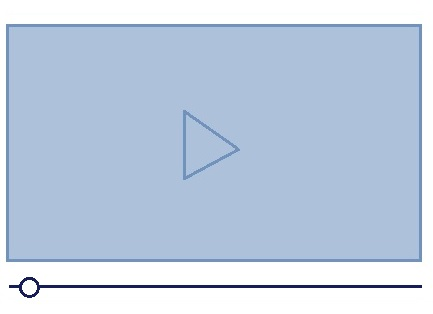
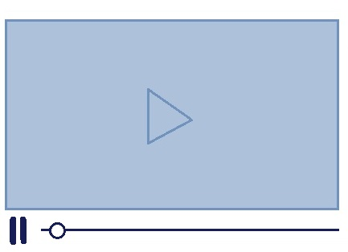
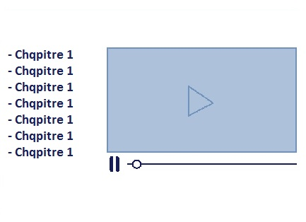
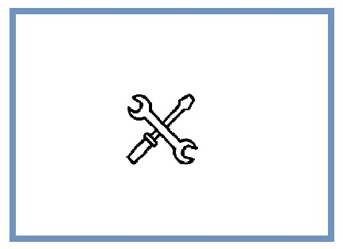

Lecture continue
Lecteur simple, sans pause manuelle possible

Pause Manuelle
Lecteur simple, avec lecture/pause manuelle possible

Chapitres visibles
Lecteur simple, avec lecture/pause manuelle possible, chapitres visible non cliquables

Chapitres visibles
Lecteur simple, avec lecture/pause manuelle possible, chapitres non visibles non cliquables

Editeur
Lecteur sur mesure